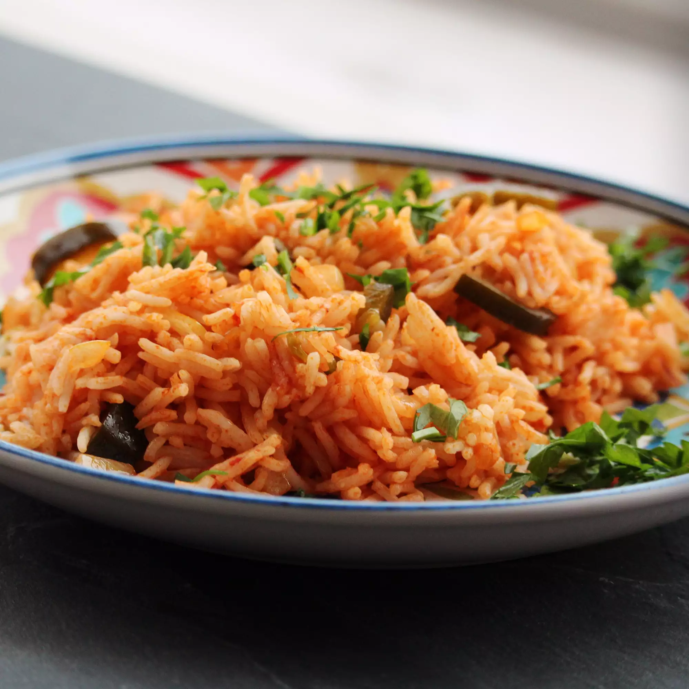

Mexican Rice

Easy Authentic Mexican Rice
This easy Mexican rice recipe is cooked with onion powder, garlic powder,
and tomato sauce for a simple side dish. Add green bell pepper, red bell
pepper, or fresh tomato to the rice before simmering for extra flavor and
color, according to your family's taste. Use chicken stock in place of
water for even more savory flavor.
Ingredients
- ¼ cup canola oil
- 1 tablespoon onion powder
- 1 tablespoon garlic powder
- 1 cup uncooked white rice
- 1 ½ cups water
- 1 (6.5 ounce) can tomato sauce
Steps
-
Heat canola oil in a skillet over medium-high heat; season with onion
powder and garlic powder. Stir in rice and cook until golden, 2 to 4
minutes.
-
Stir in water and tomato sauce; bring to a boil. Reduce heat to
medium-low, cover, and simmer until rice is tender, about 15 minutes.